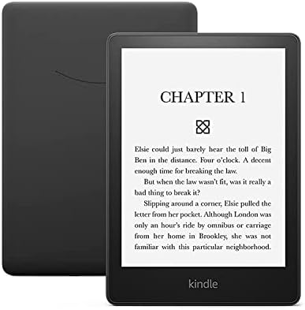
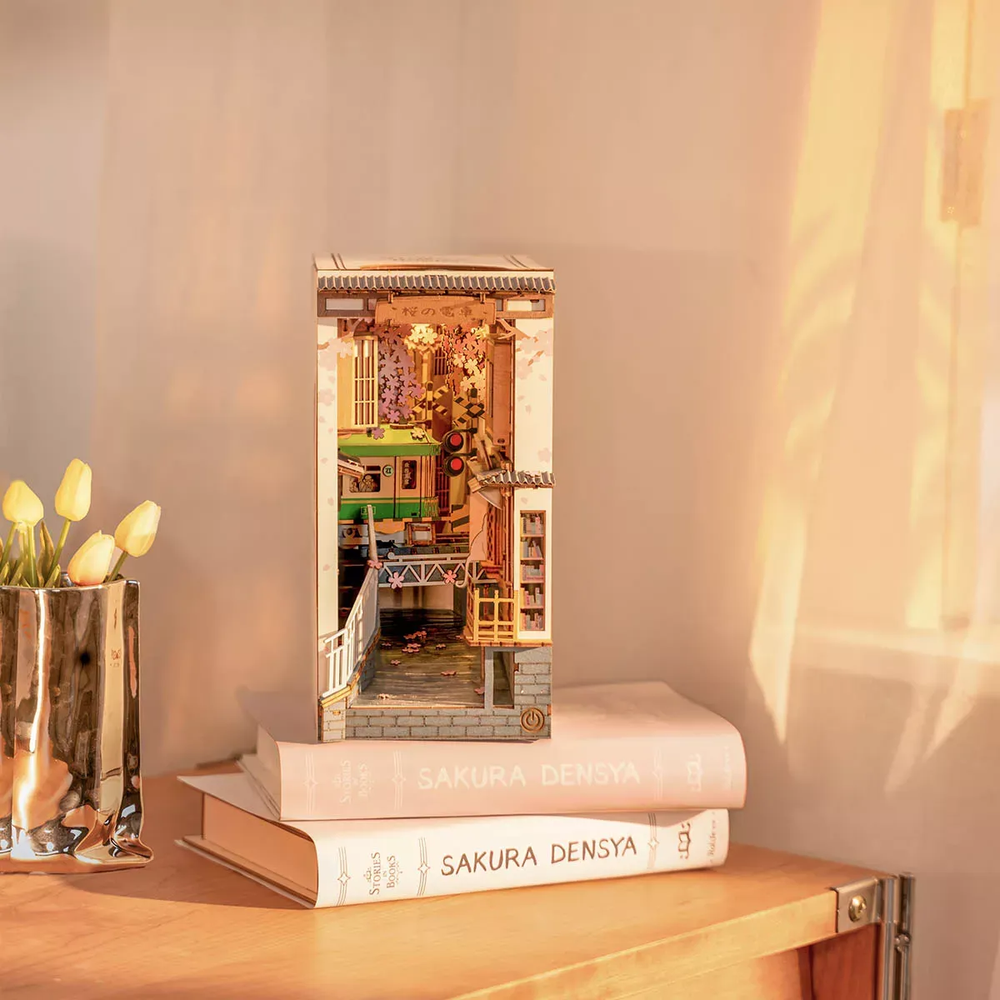
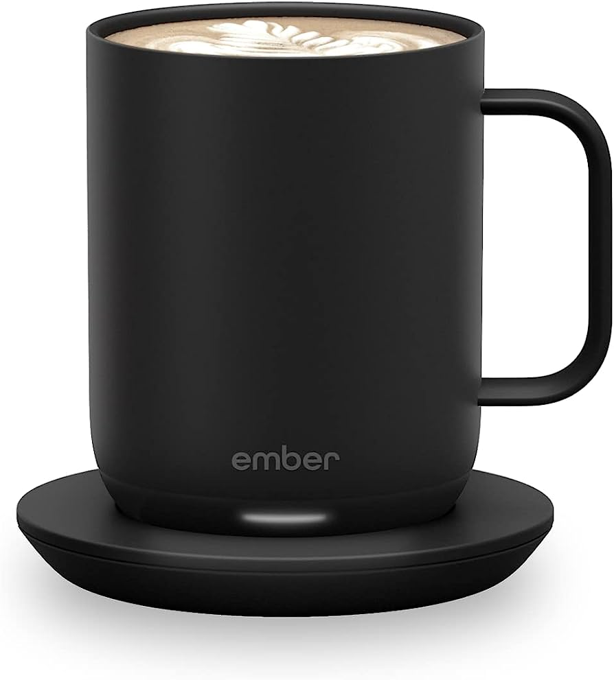
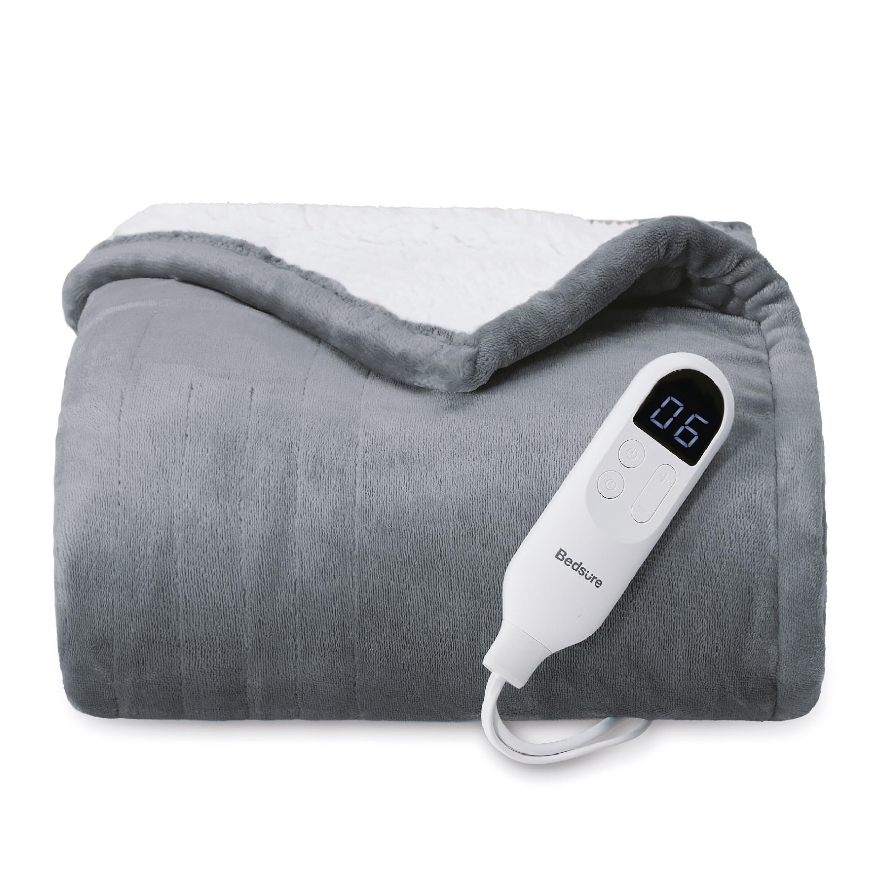
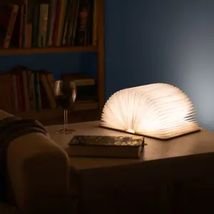

5 najboljih poklona za ljubitelje knjiga ovog prazničnog perioda
Kada je u pitanju odabir poklona za ljubitelje knjiga u vašem životu, nikada ne možete pogriješiti ako im poklonite knjige s njihove liste želja. Međutim, ako želite nešto drugo osim knjige, ima dosta opcija. Kao strastveni čitač, znam kako nekoliko malih stvari može podići vaše čitalačke sesije na viši nivo, čineći ih udobnijim. Bez obzira da li želite čitaocu pokloniti nešto što će im pomoći u čitanju, učiniti ih udobnijim tokom čitanja ili jednostavno tražite zabavan predmet povezan s knjigama, na ovom popisu ima sjajnih proizvoda.
1. Kindle Paperwhite
Cijena: 140$ na Amazonu
Kindle Paperwhite je odličan izbor poklona za čitača koji još nije prešao na e-čitače. Kindle Paperwhite je tanak, lagan i lako se nosi sa sobom. E-čitač vam omogućava podešavanje nijanse ekrana i promjenu veličine i debljine teksta kako biste stvorili personalizirano iskustvo čitanja koje je lako za oči. Brzo možete pretraživati definicije, isticati i komentirati odlomke i vidjeti koliko vremena vam preostaje u poglavlju.
2. DIY Minijaturni držač za knjige
Cijena: 50$ na Barnes and Noble
Sunshine Town minijaturni set za kuću u obliku knjižnice sjajan je dodatak svakoj polici za knjige. Zabavno ga je sastaviti i odličan je poklon za ljude koji vole projekte uradi sam. Ima prekidač osjetljiv na dodir koji oživljava malo mjesto dok sjedi na vašoj polici pored knjiga. Osim što djeluje kao držač za knjige, također je lijep ukras povezan s knjigama.
3. Ember Mug 2
Cijena: 125$ na Amazonu
Ember Mug 2 može unaprijediti čitanje svakoga tako što će osigurati da piće po izboru ostane na pravoj temperaturi. Šalica vam omogućuje postavljanje točne temperature, nakon čega će održavati tu temperaturu do sat i pol, što znači da će vaše piće ostati na željenoj temperaturi čak i ako se izgubite u knjizi. Ovaj poklon je savršen za čitatelje koji vole uživati u dobroj knjizi uz toplo piće.
4. Bedsure grijani pokrivač
Cijena: 60$ na Amazonu
Ako želite pomoći ljubitelju knjiga u vašem životu da doživi savršeno ugodno čitalačko iskustvo, trebat ćete im nabaviti električni grijani pokrivač. Mnogi popularni grijani pokrivači su prilično skupi, ali Bedsure-ov grijani pokrivač pruža pristupačan način da se ugrijete i ugodno osjećate. Pokrivač dolazi s šest razina grijanja tako da ga možete prilagoditi prema svojim željama.
5. Drvena preklopna LED svjetiljka za knjige
Cijena: 40$ na Barnes and Noble
Preklopna LED svjetiljka za knjige je simpatična i praktična. Lijep je dodatak svakoj polici za knjige ili radnom stolu, a istovremeno je zabavan način dodavanja svjetla tokom čitalačke sesije. Prijenosna je i može se koristiti unutra i vani. Automatski se uključuje i isključuje prilikom otvaranja ili zatvaranja. Možete je otvoriti pod bilo kojim uglom do 360 stepeni da imitirate otvorenu knjigu.